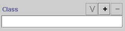
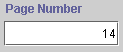
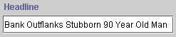
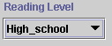

For each slot in the instance, the Instances Form displays a field where you can enter the information for that slot. The display and options for the field depend on the type of information that is included in the field.
Note: These topics describe the default fields only. You can select different formats for the fields using Forms.
Protégé-2000 provides the following fields for both Single and Multiple cardinality. For simplicity, only the Single cardinality is shown:
Field Type |
Default Single Cardinality Field |
Default Appearance |
| Boolean Field | A checkbox field that describes a slot as true or false for this instance |
|
| Class Field | A text display field and three buttons that allow you to specify a class as the value for this slot |
 |
| Float Field | A text entry field that verifies that the entered value is a valid decimal number |  |
| Instance Field | A text display field and four buttons that allow you to specify an instance as the value for this slot |  |
| Integer Field | A text entry field that verifies that the entered value is a valid whole number |  |
| String Field | A text entry field |  |
| Symbol Field | A drop-down list that allows you to select from a preset list of values |  |
A multiple cardinality field is very similar to the corresponding single field. There are some common differences:
| Single Field | Multiple Field |
| Only allows one value. Entering a new value means removing the old one. | Allows multiple values. |
| Some fields (e.g., Float, Integer, Symbol) do not have Field Buttons. |
Always have Field Buttons which allow you to view, add or create, and delete values for the field. |
To add a value, click on the Add or
Create  Field
Button.
The way you enter a value depends on the field type. For example, you may choose
values from a list, or you may simply type your value in a pop-up entry window.
Field
Button.
The way you enter a value depends on the field type. For example, you may choose
values from a list, or you may simply type your value in a pop-up entry window.
Next: The Boolean Fields